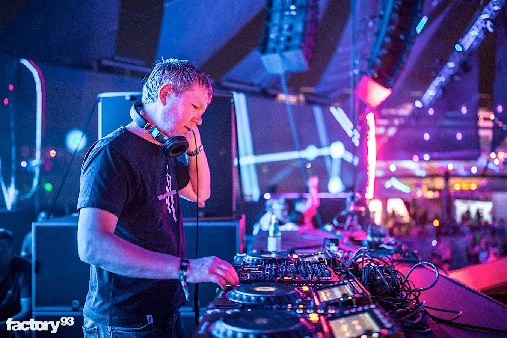
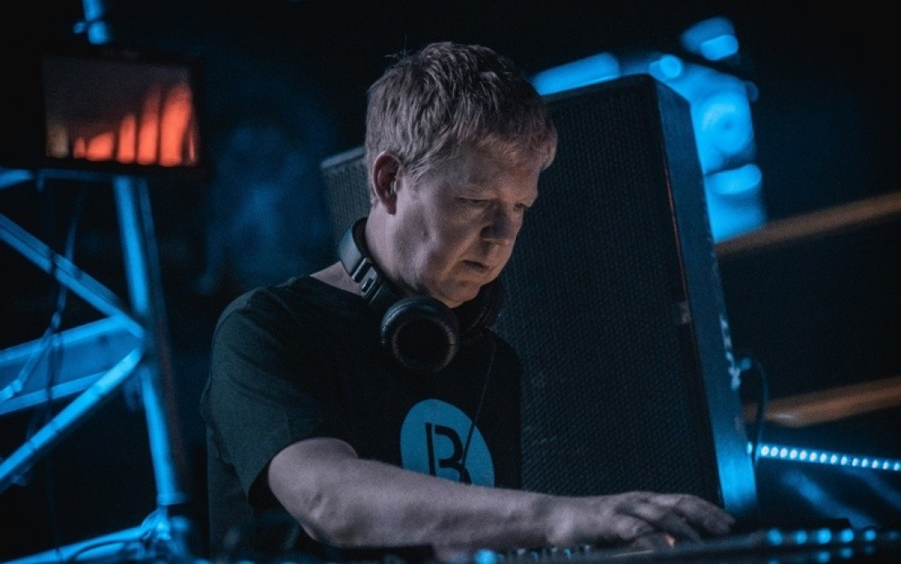
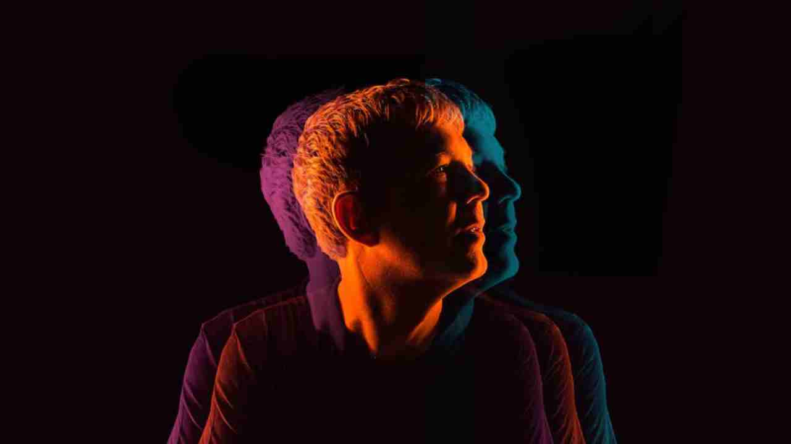

John Digweed forma parte de la restringida nómina de Djs que se hacen un hueco en el Hall of Fame de los pinchadiscos después de haberlo trabajado duro. Sus sets por todo el mundo son ya un clásico, sobretodo cuando pincha en cabina al lado de Sasha, además de convertirse en una buena oportunidad de escuchar house progresivo de calidad. Digweed se crió en Hastings en la costa sur de Inglaterra. Su ambición como Dj empezó de muy niño cuando volvía de la escuela a casa para practicar con sus viejos giradiscos. Más tarde conseguiría el primer trabajo como pinchadiscos en un hotel donde actuaba para algunas fiestas de instituto. En 1987 se mudó a Londres pero no tuvo suerte con las cintas que enviaba a los diferentes clubs de la ciudad. Digweed tuvo que improvisar sus primeras noches Bedrock en Hastings donde consiguió ser profeta en su tierra. En 1992, la superdiscoteca Reinassance lo fichó y Digweed no perdió la oportunidad de desarrollar su particular definición de la música house. Algunos críticos bautizaron su estilo como "house épico", estilo propio que le sirvió para compilar recopilatorios del mismo Renaissance, además de realizar algunos remixes.
Precisamente su primera colección para Renaissance fue mezclada junto al que a partir de entonces sería su socio, Sasha. Esta primera edición de la colección tuvo muy buena crítica, aportando credibilidad al house inglés. Su primer track vendría inmediatamente después, For What You Dream Of' junto a Nick Muir y bajo el alias que le acompañará durante su carrera, Bedrock -en referencia a la serie de dibujos animados, ''Los Picapiedra''-, que además de ser un temazo, se convirtió en uno de los himnos de la película Trainspotting. Durante mucho tiempo tanto Sasha como el mismo John Digweed disfrutaron de una residencia en el club Twilo de New York, antes de que John inaugurara las noches Bedrock en el Heaven Club de la capital inglesa. Sus noches londinenses así como sus populares mixes Northern Exposure le llevaron a las portadas de un montón de revistas especializadas y a sufrir jet lag más de lo que hubiese deseado.
En noviembre del 98 grabó el primer Global Underground (Sydney). Un poco más tarde, en 1999, editó el G.U. dedicado a Hong Kong y en el 2001 el tercero G.U. en esta ocasión homenaje a Los Ángeles. También fundó en 1999 su sello Bedrock, que no sólo se convirtió en una plataforma para que él mismo editase sus propios temas, sino que también lo utilizó para otros amantes del house trancero fichando a pioneros como Jimmy Van M, Moonface, Science Department y Steve Lawler entre otros. Ese mismo año, John empieza a tomarle el gusto a los top británicos con un sexto puesto entre 100 Dj's votados en la revista Dj Magazine. Sobretodo gracias a su rompepistas Heaven Scent, en el que John da vida a esa especie de house-tech-trance oscuro que tanta fama le aportaría junto a Sasha. En noviembre de 2000 saltaría al tercer puesto de la clasificación de Dj Magazine.
Su gira Delta Heavy Spring 2002 con Sasha y Jimmy Van M por todo Estados Unidos y la banda sonora para el film Stark Raving Mad le devuelven al primer puesto de las portadas internacionales. Stark Raving Mad no ha sido su única relación con el cine ya que en 2000 aparece al final de la película Groove de Greg Harrison que intenta documentar al público sobre la escena raver underground de San Francisco. Puedes seguir sus sesiones en la red a través de Kiss100.com (cada sábado noche de 3 a 5 h de la madrugada en dos horas de música in the mix donde han pinchado los españoles Óscar Egoist y Dujay). En 2004 firmará el Fabric 20 en el queda pistas de su nuevo sonido menos oscuro y más minimal y cristalino, ahora más que nunca con la vista puesta en Alemania y centroeuropa.
Ya en el 2006, estando Digweed en un status privilegiado dentro de la escena y con su sello, Bedrock Records, en plena forma, el sello británico le ha vuelto a llamar tras la re-edición del Mix Collection por su décimo aniversario y ha entregado Transitions su primer CD mix para Renaissance en los últimos diez años (se publicará en Junio de 2006). Utilizando el titulo de su conocido show de radio, "Transitions" aparecerá dos veces al año para recordarnos el sonido y el gusto del inimitable dj y productor británico. Renaissance: Transitions, Vol. 2, por ejemplo, aparece en 2007 con temas de Antena, David K, Guy Gerber o Jackmate, entre otros. Cada Transitions es una buena muestra de los sonidos que, en cada temporada, más le ponen al británico. Como por ejemplo el tema Spheere de nuestro joven valor Marc Marzenit que utiliza como segundo tema en el tracklist de su Transitions vol. 3.
Álbumes
Sencillos